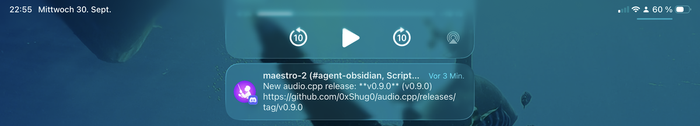
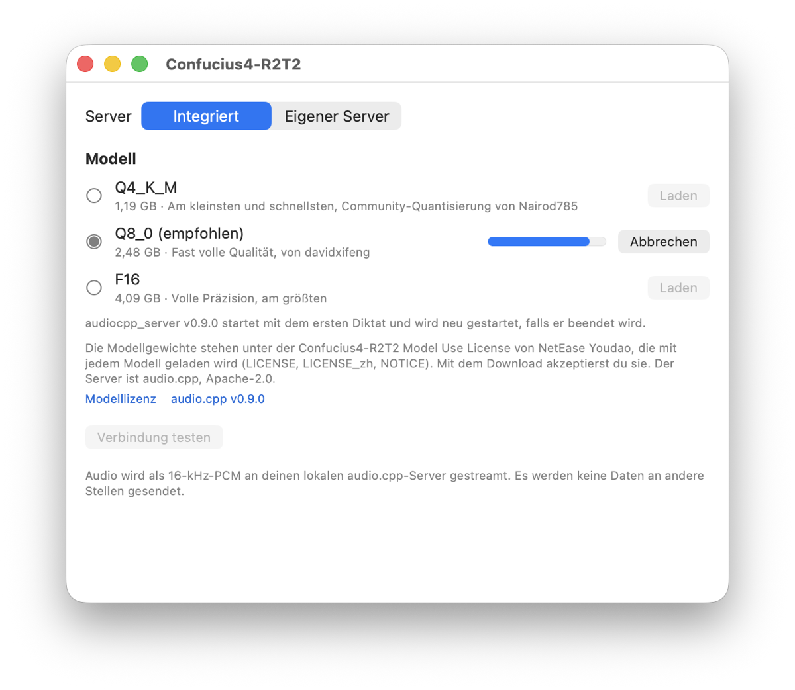

Who Signs for Claude?
The Whisper saga: 1. The Fork I Was Happy to Delete · 2. Voice Input Revisited · 3. A Team of Strangers · 4. Who Signs for Claude?
I asked an open-source app to take my plugin into its own code. Minutes later a robot blocked it: one of my contributors hadn't signed the contract. The contributor was Claude.
"What did we do, Claude?"
Last time ended with my fix merged into audio.cpp, the program that runs my speech model, and one thing missing: the next official release. With that, my plugin for TypeWhisper, the dictation app I talk into all day, could download audio.cpp and start it on its own.
The next day my dictation fell apart. Letters went missing. Words came out with random capitals. When I said Devboard, the dashboard my servers run from, it wrote "Deathboard".
I was sure it was our fix. Its last change was a safety check, and I dictated my theory through the broken dictation: "i think the byte identical thing restarts the transcription now at random intervals." Then: "And I thought, what the f&%# did we do, Claude? And we got it even merged...sigh"
Claude Code, the AI I build with, rebuilt the server twice before it checked the one thing that mattered: which speech engine had written the text. It wasn't mine. TypeWhisper had quietly switched to Apple's built-in speech recognition, set to German. German ears on English speech. German capitalizes every noun.
"The problem is in front of the computer."
But why had it switched? My server had crashed, and TypeWhisper fell back to Apple and never switched back. The next morning I asked my AI about a change I'd spotted in audio.cpp, from someone called hdcola. It fixed exactly the crash that had knocked me out, merged the afternoon before. One more stranger on the team, and nobody had asked them.
That fixed this crash, not the next one. When the server is down, dictation silently goes somewhere else. A plugin that runs its own server, and restarts it when it dies, would close that hole. That was waiting on the release.
"I am waiting for a release just once"
The maintainer had said next week. I asked my AI to check audio.cpp every two hours and ping me on Discord. It started building a scheduled job, a log file and a state file in my notes. I stopped it: "i am waiting for a release just once." It ran a small watcher instead.
Wednesday evening, my iPad lit up:

Three minutes later I told the AI in the other session: "Finally audio CP has released 0.9.0."
Everything was in it. My fix, the stranger's smaller model, hdcola's crash fix. My own plugin repository got one last release, built on the official audio.cpp, with a note at the top: this repo retires when the plugin goes official.
"Then let's build the real official plugin"
"Then lets build the real official plugin because i wanted to install that and we need to add the ui right"
Twelve minutes later the new version was installed on my Mac. A switch picks between its built-in server and one I start myself. Built-in downloads the exact audio.cpp release and the model, and checks each file against a fingerprint to be sure it got the right one. The server starts with my first dictation. If it crashes, the plugin restarts it.

My first test went to Apple's German engine again. The new plugin started fresh, so TypeWhisper had picked the fallback. Same trap, second time. I picked R2T2 by hand.
Then I tested in German: "Cool, dann probiere ich es jetzt mal aus mit dem selber gemachten Plugin." Built-in, on the recommended model, wrote it back in German. My old hand-started server, on the half-size model, answered: "Cool, then I'll try it again out with the plugin."
I hadn't asked for a translation. All my tests of the small model had been in English.
"Not signed by me but by you"
TypeWhisper's maintainer had told me last week: community plugins live in their code, under my name. Shortly before midnight I opened the pull request, the proposal to add my plugin. A check went red almost immediately. It wanted a contributor license agreement, a contract each contributor signs so the project may use their code. The contributor without one: @claude.
Every commit, each saved step of the code, ends with a line crediting my AI as co-author. GitHub linked that line to Claude's account, and the check counted it as another contributor who had to sign.
"f&%# it needs a agreement not singd by me but by you -.-"
The project's rules only ask humans to sign. The bot didn't know that. I signed mine, and the credit line came off all six commits, with the code unchanged, and the pull request description says plainly that it was built with Claude Code. The check went green.
"Monitor & fix & amend & push in a loop"
The next reviewer was another robot. CodeRabbit is an AI that reads every proposed change and comments line by line. It raised eight problems. My AI checked each one against the code and agreed with all eight. One of them: start two dictations at the same moment and the plugin starts two servers, and the second kills the first.
After the fixes it found three more. Then two more.
"two more can you monitor & fix & amend & push in a loop"
So one AI fixed and pushed, and the other reviewed. Then CodeRabbit paused itself: "branch is under active development." We were changing the code faster than it could review. I switched it back on, and it used up its reviews for the hour. Two of its comments never got marked as fixed, even though the fix was exactly what it had suggested. My AI answered each one with the fix and the test showing it's fixed.
Ten commandments
After midnight, the human answered. Marco, TypeWhisper's maintainer, left ten comments: seven to fix before merging, three that could wait for a follow-up.
"Make a new commit this time with these changes." Not a rewrite of the old ones, so he could see exactly what had changed. All ten got fixed, including the three that could wait.
"Push and wait until coderabbit reviewed and only then post replies." CodeRabbit found nothing new. The replies went out, and I closed the discussion where I had first asked how to submit a plugin.
One of Marco's ten had slipped past both AIs: a Chinese character that arrived in two pieces came out as a garbage symbol.
"No timer? You missed it!"
My AI stopped watching after that.
I woke early and wondered why Discord had stayed quiet. "No timer? You missed it!"
It had. Within an hour of our last reply, Marco approved it, "All ten points are addressed," then merged and released it. My AI couldn't find the add-on page, so I pasted it in: Confucius4-R2T2, a community plugin by scriptease, right there on TypeWhisper's website.
I swapped my homemade build for the official one, signed by TypeWhisper, and stopped the server I'd been starting by hand for two weeks.
The release came from the maintainer, the crash fix from a stranger, the merge from another stranger at three in the morning. Claude wrote most of the code. I signed for it.
The first time in this saga, I won by deleting my fork. The second time, by deleting my copy of the fix. After this post goes out, my plugin repository goes too.